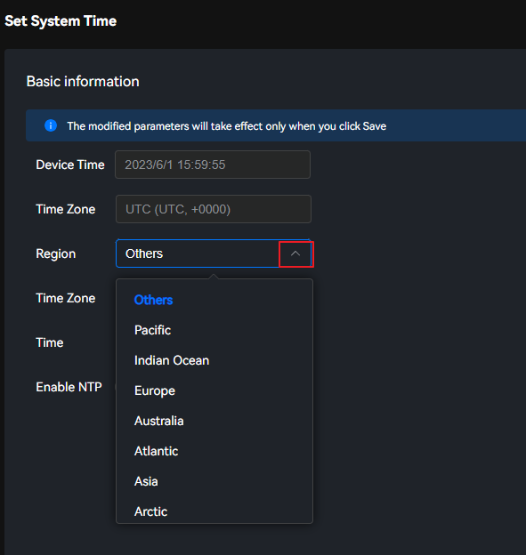
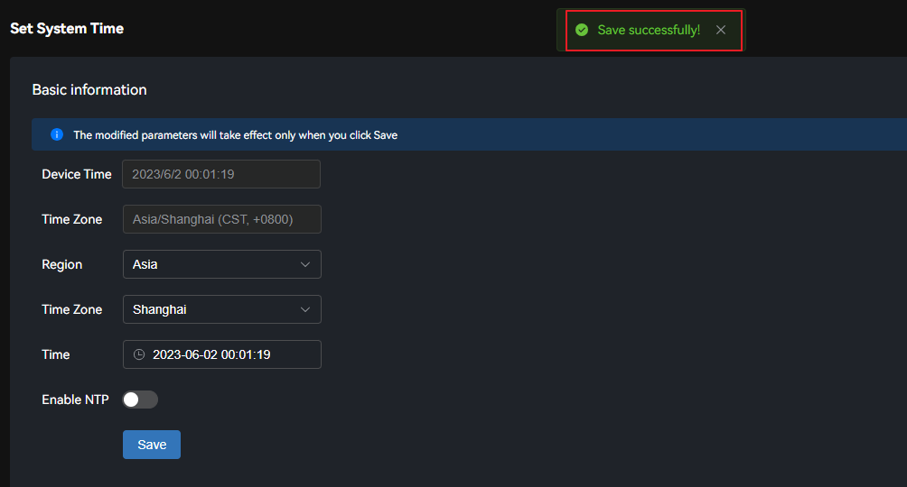
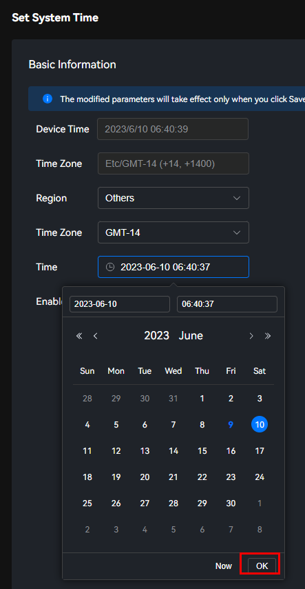
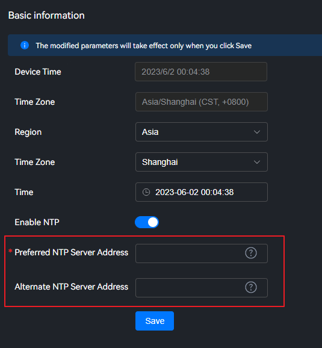

The system automatically obtains the time or time zone of the current PC. You can configure parameters so that the NTP service automatically synchronizes the current time of the NTP server to the device, or manually adjust the time and synchronize the time to the device.

The NTP service is disabled by default before delivery. Only IP addresses and switches can be configured on the WebUI. Enabling the NTP service has security risks. If you need to configure security options such as ports and keys, configure them on the background.
Scenarios
The edge device supports time synchronization from a unified time server to meet the video data time synchronization requirements in typical scenarios, such as smart transportation, smart parks, and smart retail.
Parameter Description
Parameter |
Description |
|---|---|
Device Time |
Current time of a device. |
Time Zone |
Time zone of the edge management system. The time zone information consists of Area and Time Zone. The default value is UTC. |
Setting the Region and Time Zone
- Choose Management > Time > Set System Time.Figure 1 Setting the system time

- In the Region drop-down list, select the parameters to be set.Figure 2 Setting an area
 - In the Region drop-down list, select the parameters to be set.Figure 3 Setting time zone

- Click Save.The message "Saved successfully" is displayed in the upper part of the page. The value of Time Zone is the area and time zone set in the previous steps.Figure 4 Setting the region and time zone

Setting the System Time
You can set the system time by manually adjusting the time or automatically synchronizing the time with the NTP server.
- Manually correct the time.
- Choose Management > Time > Set System Time.Figure 5 Setting the system time
- Click the time drop-down list box to set the date and time.
- The time supported by the system ranges from 2015-01-01 00:00:00 to 2099-12-31 23:59:59.
- Changing the time may cause the certificate and password to expire. If the certificate expires due to time change, log in to the background and restart the system.
Figure 6 Manually setting the time on the PC client
 - Click Confirm.
- Click Save.The message "Saved successfully" is displayed in the upper part of the page.Figure 7 Saving the time setting

- Choose Management > Time > Set System Time.
- The NTP client automatically synchronizes time.
- Choose Management > Time > Set System Time.Figure 8 Setting the system time
- Click
 to enable the NTP function.Figure 9 Enabling NTP
to enable the NTP function.Figure 9 Enabling NTP
Table 2 Enabling NTP Parameter
Description
Enable NTP
Enables or disables the NTP function of the edge device. If the NTP function is enabled, the time can be synchronized with the NTP server.
Click
 or
or  to enable or disable the NTP function, and then click Save.
to enable or disable the NTP function, and then click Save. - Configure the NTP server address as prompted. For details about the configuration items, see Table 3.Figure 10 Configuring the IP addresses of the NTP servers
 - Click Save.A dialog box is displayed in the upper part of the page, indicating that the settings are saved successfully. The device time is the NTP server time.Figure 11 Saving the NTP settings

If a terminal device is connected to the edge device, the terminal device can be configured to synchronize time with the NTP server based on the networking scenario.
Prerequisites: The IP address of one NIC of the edge device can connect to the NTP server.- Atlas 200I A2 IP: a200I_ip1 (IP address for connecting to the NTP server)
- IP address in the same network segment as the device: a200I_ip2
- Device IP address: device_ip
Configuration procedure:
- Configure the device IP address.
- Scenario 1: The IP address of the device is in the same network segment as the IP address of the NTP server connected with the edge device.
The route of the device is the same as that of the edge device by default. You only need to set the NTP server IP address in the NTP configuration.
- Scenario 2: The device IP address and the IP address of the NTP server connected with the edge device are in different network segments, but are in the same network segment as the IP addresses of other NICs of the edge device.
Configure the device route that is destined for the IP address in the same network segment of the edge device: route add -net 0.0.0.0 gw a200I_ip2
- Scenario 1: The IP address of the device is in the same network segment as the IP address of the NTP server connected with the edge device.
- Configure the reverse route on the NTP server: route add -host device_ip gw a200I_ip1
- Choose Management > Time > Set System Time.